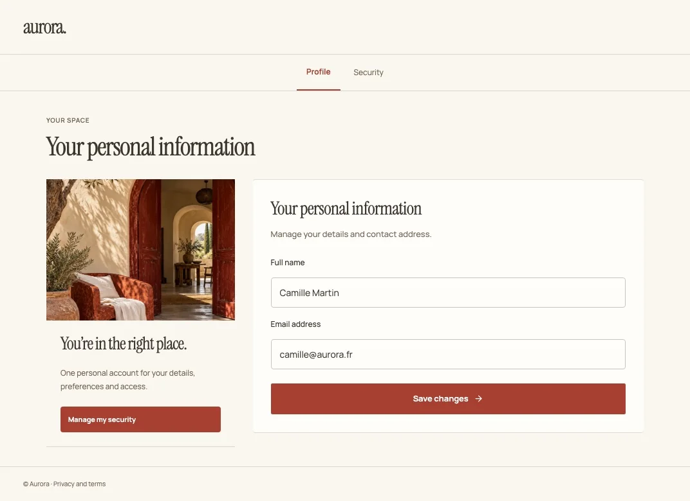
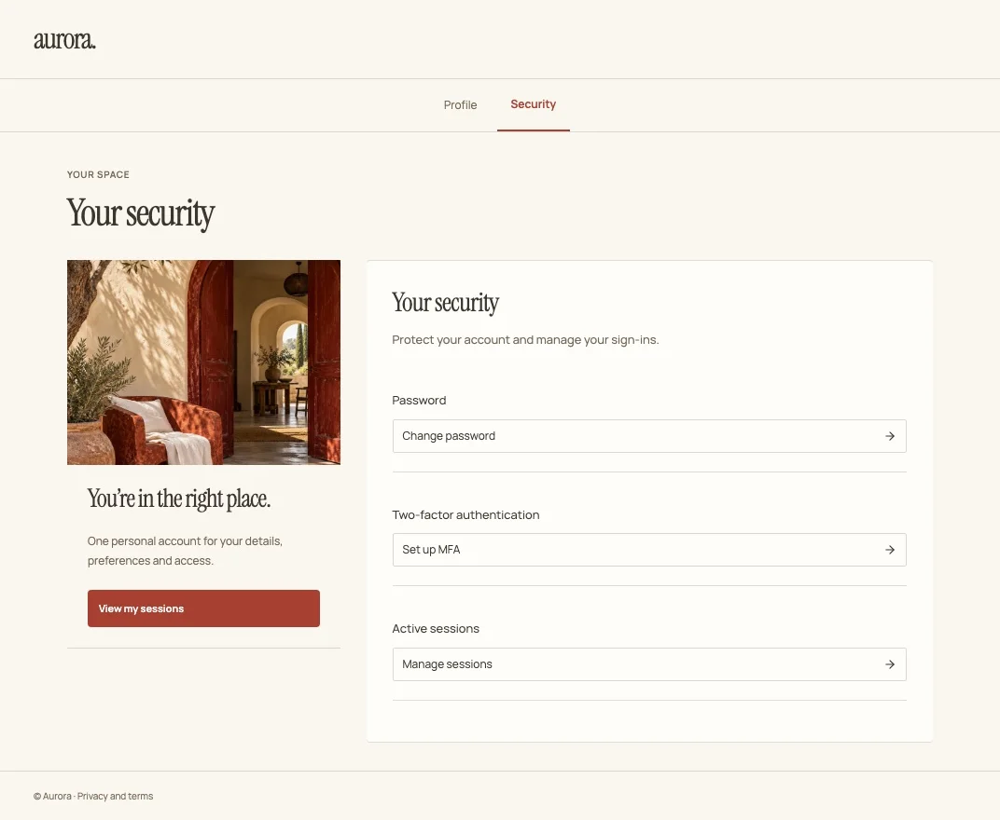

Open source · For every Keycloak project
Your Keycloak.
Your design.
An open-source visual theme studio for your Keycloak projects. Explore complete designs, edit your screens and export your source. Try the online demo or host the Studio yourself.
Apache 2.0. No account or HankoShell subscription required.
01 / THE COLLECTION
One identity.
Sixteen ways in.
Quiet and considered. Bold and electric. Find a direction that feels like you, then make it part of your product.
Actual Studio screens. The same compositions, typography and imagery you will edit and export.
02 / THE WHOLE EXPERIENCE
Keep the feeling.
Everywhere.
A memorable welcome is a beginning. Carry the same identity through profile, security, administration and email.


One design language, across 18 screens.
Explore the whole theme03 / FROM IDEA TO IDENTITY
Make it yours.
Then make it live.
Keycloakify powers native compilation. HankoShell Studio adds a visual canvas, complete design directions and a connected journey across your application.
Start creating- 01
Choose a direction.
Explore complete themes. Compare sign-in, account and security screens before choosing your starting point.
- 02
Find your own expression.
Edit blocks, imagery, colours, typography and content. Keep your brand or start fresh. Preview desktop, mobile and translated pages.
- 03
Take your work with you.
Export your project as portable JSON. Compile native sign-in and email themes locally with the CLI, or bring application screens into React and Next.js.
04 / BUILT FOR YOUR WORKFLOW
Create visually.
Ship on your terms.
Use the standalone editor, embed it in React, or build through the CLI. Your source stays portable and your deployment stays yours.
# Install the CLI from npm
%%INSTALL_COMMAND%%
# Export your project from the Studio, then compile
npx hanko-theme build-project identity.studio.json \
--name identity --out dist_keycloakDESIGNED TO GO FURTHER
Your identity speaks
more than one language.
Eight content languages. One consistent visual identity.
A FEW GOOD QUESTIONS
Before you
make it yours.
YOUR NEXT FIRST IMPRESSION
Make the entrance
feel like you.
Open HankoShell Studio 16 themes. A whole world of your own.